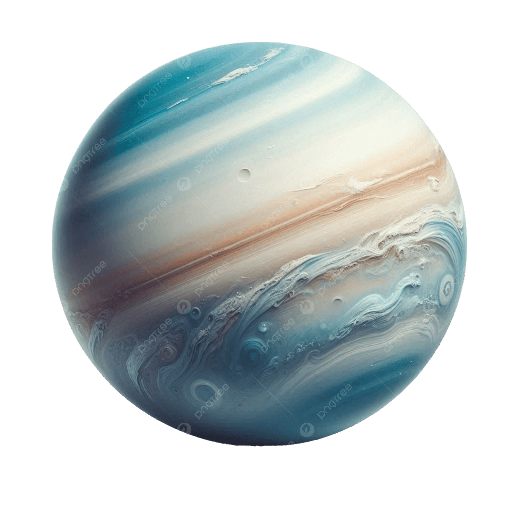
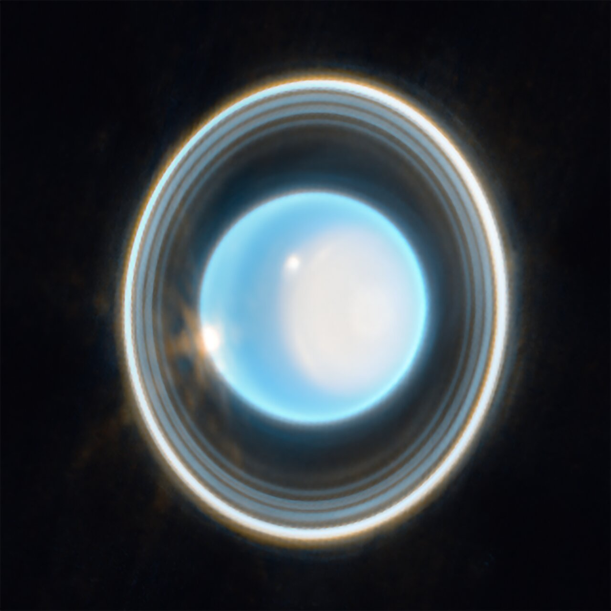

Uranus is a very cold and windy world. The ice giant is surrounded by 13 faint rings and 28 small moons. Uranus rotates at a nearly 90-degree angle from the plane of its orbit. This unique tilt makes Uranus appear to spin sideways, orbiting the Sun like a rolling ball.
Uranus was the first planet found with the aid of a telescope. It was discovered in 1781 by astronomer William Herschel, although he originally thought it was either a comet or a star. It was two years later that the object was universally accepted as a new planet, in part because of observations by astronomer Johann Elert Bode.
With an equatorial diameter of 31,763 miles (51,118 kilometers), Uranus is four times wider than Earth. If Earth was the size of a nickel, Uranus would be about as big as a softball.
Uranus is located about 1.8 billion miles (2.9 billion kilometers) from the Sun, making it the seventh planet from the Sun. It takes 2 hours and 40 minutes for sunlight to travel from the Sun to Uranus.
One day on Uranus takes about 17.2 hours. Uranus makes a complete orbit around the Sun in about 84 Earth years.
Uranus is the only planet whose equator is nearly at a right angle to its orbit, with a tilt of 97.77 degrees. This may be the result of a collision with an Earth-sized object long ago. This unique tilt causes Uranus to have the most extreme seasons in the solar system. For nearly a quarter of each Uranian year, the Sun shines directly over each pole, plunging the other half of the planet into a 21-year-long, dark winter.
Uranus is an ice giant, which means it has a larger core and a thicker atmosphere than the gas giants Jupiter and Saturn. Uranus is made up of hydrogen, helium, and methane gas, with a small rocky core. The methane in the atmosphere absorbs red light, giving the planet its blue-green color.
Uranus has 27 known moons, which are named after characters from the works of William Shakespeare and Alexander Pope. The five largest moons are Miranda, Ariel, Umbriel, Titania, and Oberon. These moons are made mostly of ice and rock and have a variety of surface features, including craters, valleys, and cliffs.
Uranus has 13 known rings, which are dark and narrow. The rings are made up of small particles of rock and ice, and they are thought to be relatively young, possibly formed from the debris of a shattered moon. The rings are not as prominent as those of Saturn, but they are still an important feature of the planet.
In order of increasing distance from the planet, the rings are called Zeta, 6, 5, 4, Alpha, Beta, Eta, Gamma, Delta, Lambda, Epsilon, Nu, and Mu. Some of the larger rings are surrounded by belts of fine dust.
